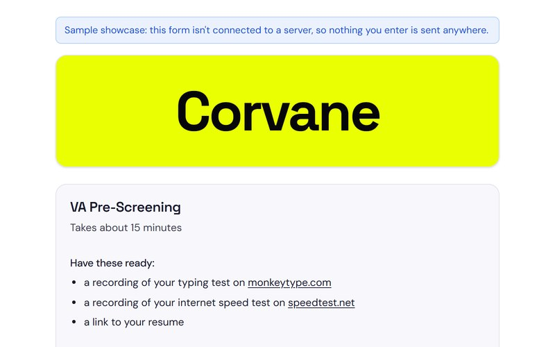
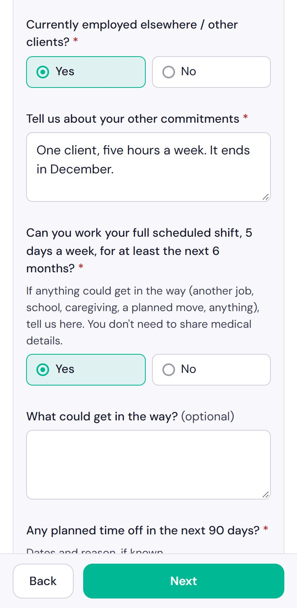
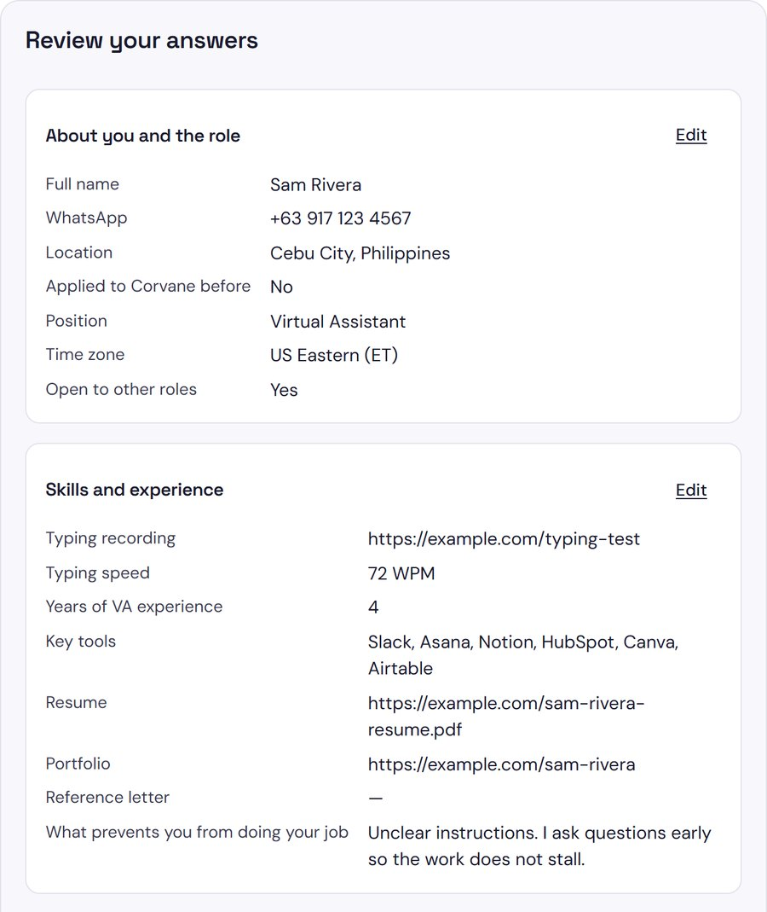

Case study: VA pre-screening form
Eight saved screens, one working form
A saved web page keeps its wording and loses its behaviour. I took eight saved screens of a VA pre-screening form, where the buttons no longer did anything, and rebuilt them as one HTML file that checks answers, saves progress and needs no server.
- saved screens rebuilt
- 8
- questions across 5 steps
- 46
- browser checks passed
- 325 of 325
- 8 saved screensScripts gone, so nothing on them works
- 1 HTML file, 139 KBStyles, fonts and script all inside
- A form that runsTry it: nothing you type is sent
The brief
This is a sample, not client work. I rebuilt a real company's VA pre-screening form from saved copies of its pages, so the questions are still that company's wording. I've left its name out, it has no connection to this page, and Corvane is a stand-in name.
The job was to get the same form running again as one file, with no server behind it. I built it with Claude Code, working only from the saved pages.

-
One file, nothing else
Styles, fonts and script all sit inside one HTML file, so it opens with a double-click and works with no internet connection.
-
Same questions, same behaviour
Labels, help text, answer buttons and field limits come straight from the saved pages. A test compares them, so nothing relies on my copying.
-
No real answers in the file
The saved pages held a real application. Tests replay those answers from a private copy, and a search of the published file for them finds nothing.
-
Honest about being a sample
With no server, nothing is sent. The last screen still says "We'll email you", so a notice on every screen makes clear it won't.
How it was rebuilt
Six steps, in order. The first and the last are what make the rebuild checkable.
-
Read the saved pages as data
The saved copies had lost their scripts, so the markup was all that survived. A script pulled every visible text, field setting, answer option and review row into a comparison file, so later checks had something exact to compare against.
Python
-
Work out what the pages didn't show
Blank copies hide follow-up questions. The filled-in review page listed three rows no blank page had: other commitments, what could get in the way, and where you heard about the company. It also listed tools in the order they were picked, so the new form keeps that order.
-
Describe the questions in one list
All 46 questions live in one list, with their type, limits, help text and when they appear. A small renderer turns that list into fields, so adding a question means adding one entry, plus a row if it should show on the review screen.
HTML5, CSS3, vanilla JavaScript
-
Save progress without a server
The first screen promises that answers are saved in the browser until you submit. They're saved after every change and deleted on submit. The current step lives in the URL, so reload, Back and Forward all work.
localStorage, URL hash
-
Replace what needs a backend
The email code and Cloudflare check can't run without one, so they're gone, and "Send code" became "Continue". A button shouldn't promise something that doesn't happen.
-
Test it against the originals
A browser test walks every screen and compares it with the file from step 1. It then replays the answers from the saved review page and compares all 45 rows, before checking reloads, edits, follow-ups, phone widths and HTML typed into answers.
agent-browser, Chromium, JavaScript
What broke, and what fixed it
None of this reached the live page, because it all turned up before launch. In three of the four, the test was wrong and the form was right, which is worth remembering before trusting any result.
-
// answer read from // the saved page open_to_other_roles: "NoSkills and experienceEdit"Before if tag == "div": self.finish_cell() # open_to_other_roles: "No"After A test that blamed the form
The first full run failed 16 checks and stopped early. The form was fine. The saved pages are minified with few closing tags, so my parser ran the last answer in each section into the next heading, and no such answer exists. That, plus one stray fragment, caused all 16.
-
click "label.radio" selected: null // target under the // sticky barBefore el.scrollIntoView({ block: "center" }) click "label.radio" selected: "Yes"After Scripted clicks passed, real clicks missed
A scripted click works even if something covers the button. A real mouse click doesn't: with a question under the sticky Back and Next bar, the click hit the bar instead. A person would scroll first, and the original has the same bar, so I kept it. The test now centres each target first.
-
expected: "Slack, Asana, ..." got: "Asana, ... Slack"Before // re-picked tools // move to the end tools.slice(-2) == ["Slack", "Claude Code"]After A failure that was correct behaviour
After a test switched two tools off and on again, the review row no longer matched the saved page. The form was right. Tools list in the order they're picked, as in the original, so re-picked ones move to the end. The check now tests for exactly that.
-
submitUrl: '', await fetch( CONFIG.submitUrl, { method: 'POST', ... })Before finishedEmail = state.email clearDraft() // nothing is sent anywhereAfter Code the sample didn't need
The first version could post finished applications to a server, with a clear error if the send failed, and that path passed its tests. Then the brief settled on a showcase with no database, so I removed it. One check now fails if any sending code comes back.
Results and limits
These are test results from the published page, run in November 2026. Nobody has applied through it, so there are no completion numbers, and I'm not claiming any.
What it delivered
- 8 saved screens became 1 HTML file of 139 KB, with its fonts inside.
- 46 questions across 5 steps, including 3 follow-ups the blank copies never showed.
- 325 of 325 automated checks passed on the live page: 247 on the flow and 78 on layout at 1280, 390 and 320 pixels wide.
- 45 of 45 review rows matched the saved page exactly when its answers were replayed.
- No requests beyond the page itself while filling in the form, and no page errors.
Where it stops
- It's a sample. Nothing is sent, so the "We'll email you" on the last screen never happens. The own-words warning mentions copy-paste and AI checks, and nothing runs them.
- There's no email code or Cloudflare check, so any address gets through.
- Most dropdown options are mine, because the saved pages only showed the values someone had chosen. The 3 follow-up questions, when they appear, and the error messages are my wording too.
- Tests ran in Chromium at set window sizes. It hasn't been run in Safari, Firefox or on a real phone.
A saved page shows what a form looked like, not what it did. The work is finding the behaviour, then proving the rebuild matches.
Under the hood
{
kind: 'textarea',
id: 'shift_blockers',
label: 'What could get in the way?',
rows: 2,
maxlength: 500,
required: (answers) => answers.shift_commitment === 'No',
showIf: (answers) => Boolean(answers.shift_commitment),
},| What ran | Passed |
|---|---|
| Every screen against the saved pages, validation and follow-ups | 202 of 202 |
| Reloads, edits, Back and Forward, HTML in answers, submitting | 29 of 29 |
| After submitting, incomplete submits, "Not you?", fonts and links | 16 of 16 |
| Layout at 1280, 390 and 320 pixels wide | 78 of 78 |


Need a form or web tool that actually runs?
I build forms and small web tools, and test them in a real browser before handing them over. Book a free 30-minute call, or send me an email.
- raffymcfee@gmail.com
- Location
- Pampanga, Philippines